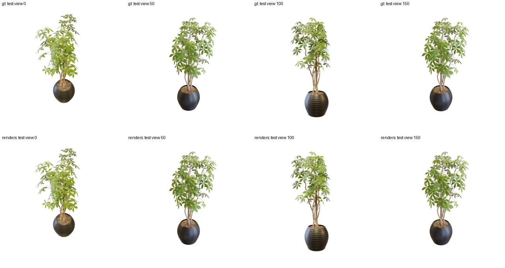
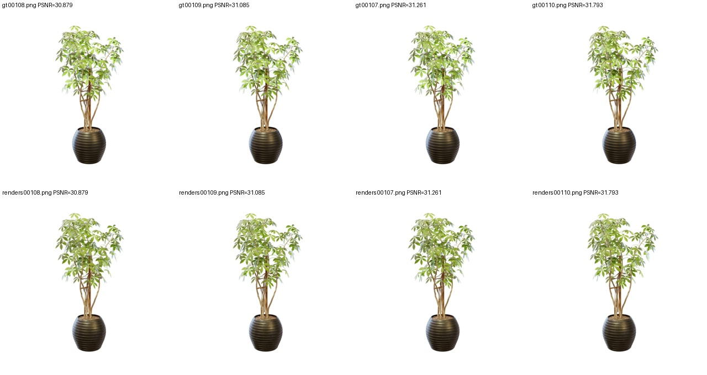
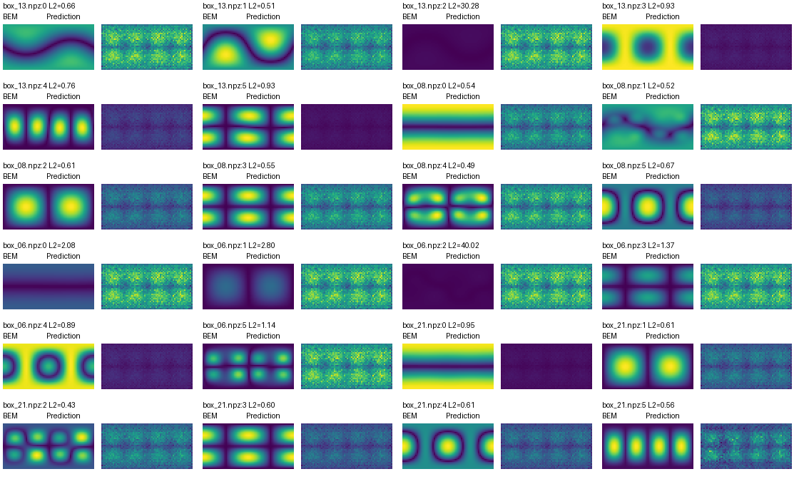
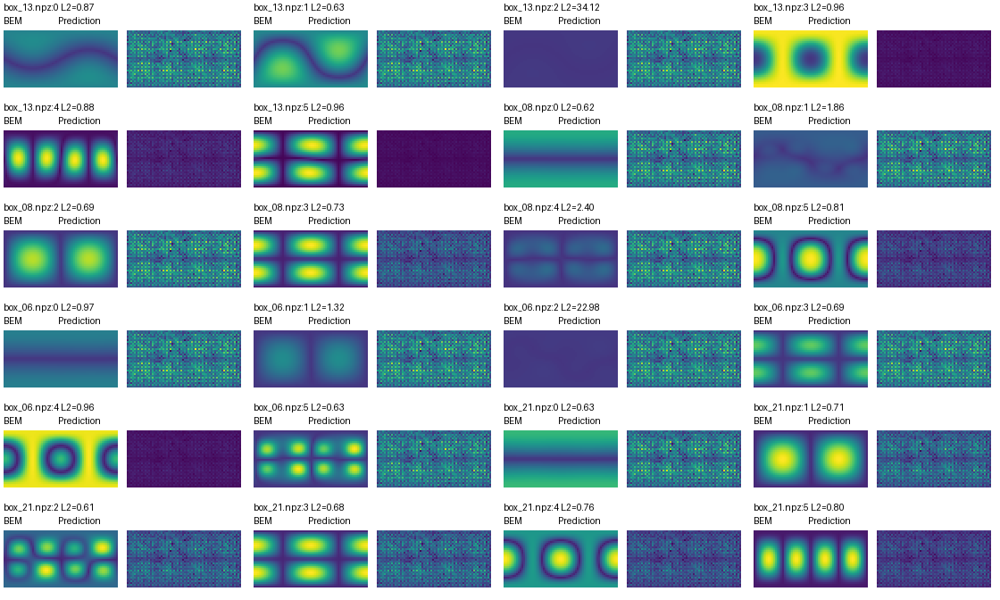

独立验证 · 新模型完整模拟
本轮实际重跑：50,000 子步 / 125 帧
打开 / 下载视频离线查看，不需要 CUDA / Conda。32 项独立检查：21 通过、5 失败、6 未验证；不能称三篇论文完整复现成功。
说明见同目录《查看与复跑指南.md》；以独立验证报告为准。PhysGaussian 视频没有同步物理声音。
本轮实际重跑：50,000 子步 / 125 帧
打开 / 下载视频已核查视频及摘要图；不代表本轮重新模拟
打开 / 下载视频已核查视频及摘要图；不代表本轮重新模拟
打开 / 下载视频已核查视频及摘要图；不代表本轮重新模拟
打开 / 下载视频已核查视频及摘要图；不代表本轮重新模拟
打开 / 下载视频已核查视频及摘要图；不代表本轮重新模拟
打开 / 下载视频已核查视频及摘要图；不代表本轮重新模拟
打开 / 下载视频已核查视频及摘要图；不代表本轮重新模拟
打开 / 下载视频已核查视频及摘要图；不代表本轮重新模拟
打开 / 下载视频已核查视频及摘要图；不代表本轮重新模拟
打开 / 下载视频已核查视频及摘要图；不代表本轮重新模拟
打开 / 下载视频已核查视频及摘要图；不代表本轮重新模拟
打开 / 下载视频点击图片看原图；神经声辐射预测存在明显误差，保留失败结果。




先调低音量，再固定音量比较。x/y/z 为听者方向；神经音频为历史结果。
bem_listener_x.wav
bem_listener_y.wav
bem_listener_z.wav
pat_listener_x.wav
pat_listener_y.wav
pat_listener_z.wav
bem_listener_1.wav
bem_listener_2.wav
bem_listener_3.wav
neural_listener_1.wav
neural_listener_2.wav
neural_listener_3.wav
baseline.wav
comparison_all.wav
damping_x4.wav
hit_middle.wav
mass_x4.wav
stiffness_x4.wav